SECCIÓN 3
CARROCERÍA - ACCESORIOS
1. OPERACIÓN Y ORIENTACIÓN DE LOS FAROS


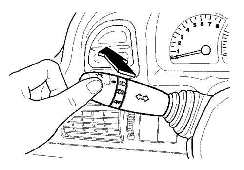
- - Interruptor de luz de adelantamiento
- Desplace la palanca de conmutación de luz en la dirección del asiento del conductor y compruebe que parpadee la luz de adelantamiento.
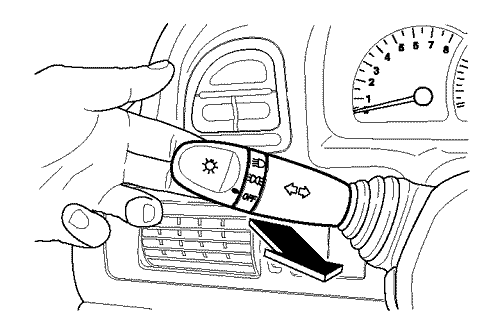
- - luz de conducción diurna (opcional)
- Compruebe que se encienden las luces de estacionamiento, traseras, la luz de la matrícula y el alumbrado del tablero de instrumentos cuando el interruptor de encendido se pone en la posición ON con la luz apagada. Compruebe si los faros delanteros (luz de cruce) también se encienden cuando se arranca el motor. Permanecen encendidos hasta que se apaga el interruptor de encendido o se enciende el interruptor de luz.
- Orientación de los faros
- - Compruebe la orientación de los faros.
- 1) Sitúe el vehículo sobre una superficie nivelada.
- 2) Haga bascular varias veces la suspensión delantera.
- 3) Sacuda el vehículo en sentido lateral varias veces y deje que vuelva a su posición normal.
- 4) Limpie las lentes de los faros y compruebe la orientación de éstos.

- Interruptor de nivelación de faros (opcional)
- - Compruebe el funcionamiento del interruptor de nivelación de faros.
- 0 = Asiento delantero ocupado
- 1 = Todos los asientos ocupados
- 2 = Asiento de conductor ocupado y carga en el compartimento de equipajes
- 3 = Todos los asientos ocupados y carga en el compartimento de equipajes

2. LUCES INTERMITENTES DE GIRO
- Suba o baje el interruptor de intermitente de giro a la posición de tope para activar las señales de giro y compruebe que se activen correctamente.
- Una vez terminado el giro, la señal se cancelará y la palanca volverá a su posición normal.

3. LUCES DE ADVERTENCIA DE PELIGRO
- Presione el interruptor de los intermitentes de advertencia de peligro y compruebe que todas las luces parpadeen simultáneamente.
- Unos parpadeos más breves indican un fallo en las bombillas de las lámparas.
- Presione de nuevo este interruptor para apagar los intermitentes.
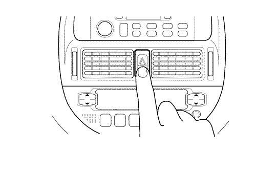
4. LUCES DE MARCHA ATRÁS
- Sitúe la palanca de cambio de marchas en la posición R y compruebe que se enciendan las luces de marcha atrás.
5. LUCES DE PARADA
- Pise el pedal del freno y compruebe que se encienda el lateral inferior de las luces de parada, situadas en el conjunto de lámparas combinadas traseras.
- Pise el pedal del freno y compruebe que se encienda la lámpara de parada central superior (opcional) de la parte trasera.
6. LUCES TRASERAS, LUCES DE POSICIÓN, LUCES DE MATRÍCULA, LUCES INTERMITENTES DE GIRO ADICIONALES
- Gire el interruptor de luz a posición y compruebe que se encienda el alumbrado trasero, de matrícula, las luces de posición y las luces intermitentes de giro adicionales.
7. INDICADORES Y LÁMPARAS DE ADVERTENCIA DEL TABLERO DE INSTRUMENTOS
Compruebe el funcionamiento de las luces de advertencia del tablero de instrumentos (con el interruptor de encendido en posición "ON").
- Velocímetro
- Tacómetro
- Indicador de combustible
- Indicador de temperatura
- Luz de advertencia/intermitentes
- Indicador de luces antiniebla delanteras
- Indicador de modo de potencia
- Indicador de modo de retención
- Indicador de luz de carretera
- Botón de selección de modo de cuentakilómetros
- Lámpara de advertencia de temperatura de refrigerante
- Lámpara de advertencia de airbag
- Lámpara de advertencia del presión de aceite del motor
- Lámpara de advertencia de sistema de carga
- Lámpara de advertencia del sistema de frenado
- Cuentakilómetros
- Indicador de posición de la palanca de selección de marchas
- Lámpara de advertencia de nivel bajo de combustible
- Lámpara de advertencia
- Lámpara de indicación de fallo
- Lámpara de advertencia de puerta abierta
- Indicador de luces antiniebla traseras
- Recordatorio de cinturón de seguridad
- Lámpara de advertencia del sistema defrenado
- Se activa al accionar el freno de estacionamiento. Si la luz se enciende también al quitar completamente el freno de estacionamiento, ello puede indicar que hay un nivel bajo de líquido de frenos en el depósito.
- Lámpara de advertencia del presión de aceite del motor
- Se enciende al activar el encendido y se apaga una vez arrancado el motor. Si la luz se activa durante la conducción, ello indica que la presión de aceite es peligrosamente baja.
- Lámpara de advertencia de sistema de carga
- Se enciende al activar el encendido y debe apagarse una vez arrancado el motor.
- Lámpara de indicación de fallo
- Se enciende al activar el encendido y se apaga poco después de que el motor esté funcionando. Si el indicador se enciende durante una conducción normal, significa que se ha producido un fallo.
- Lámpara de advertencia de temperatura de refrigerante
- Se enciende al sobrecalentarse el refrigerante de motor.
- Luz de advertencia/intermitentes
- Parpadea para indicar el funcionamiento de los intermitentes de giro exteriores o del intermitente de advertencia.
- Indicador de luz de carretera
- Se enciende al activar la luz de carretera de los faros.
- Lámpara de advertencia de puerta abierta
- Se enciende al abrir o no cerrar bien una puerta.
- Recordatorio de cinturón de seguridad
- Se activa cuando el conductor no se ha abrochado el cinturón de seguridad.
- Lámpara de advertencia de nivel bajo de combustible
- Se enciende cuando la cantidad de combustible del depósito de combustible es inferior a 7,5 l aproximadamente.
- Indicador de posición de la palanca de selección de marchas(opcional)
- Muestra la posición de marcha en que se encuentra la palanca de selección.
- Lámpara de advertencia de ABS(opcional)
- Se enciende al activar el encendido y se apaga después de 2 segundos. Si esta luz se enciende al conducir, significa que se ha detectado un fallo de funcionamiento en el ABS.
- Lámpara de advertencia de aibag(opcional)
- Parpadea varias veces cuando se activa el encendido y se apaga. Si esta luz se enciende o parpadea al conducir, significa que se ha detectado un fallo en el sistema de airbag.
- Indicador de modo de potencia(opcional)
- Se enciende siempre que la llave de encendido se pone en "ON" y se apaga. Este indicador también se enciende cuando se pulsa el interruptor de modo de potencia. Si este indicador se enciende al conducir sin pulsar el interruptor, se indica un fallo en la transmisión automática.
- Indicador de modo de retención(opcional)
- Se enciende cuando el encendido se pone en "ON" y se apaga. Este indicador también se enciende cuando se pulsa el interruptor de modo de retención.
- Indicador de luces antiniebla delanteras(opcional)
- Se ilumina al encender las luces antiniebla delanteras.
- Indicador de luces antiniebla traseras(opcional)
- Se ilumina al encender las luces antiniebla traseras.
- Indicador de operación de TCS(opcional)
- Se ilumina al activar el encendido y se apaga unos 3 segundos después, junto con la lámpara de advertencia de ABS.
- El indicador de operación de TCS parpadea al operar el control de tracción.

- Indicador de advertencia de TCS(opcional)
- Se ilumina al activar el encendido y se apaga unos 3 segundos después, junto con la lámpara de advertencia de ABS.
- La lámpara de advertencia de TCS se enciende para indicar que el sistema no funciona a causa de:
- - hay un fallo en el sistema o,
- - ha anulado el sistema pulsando el botón TCS ON/OFF.

- Lámpara de advertencia SSPS(opcional)
- Se ilumina al activar el encendido y se apaga unos 3 segundos después.

8. LUCES DE TECHO Y CORTESÍA
Compruebe el funcionamiento de la lámpara central de techo y de la luz delantera de lectura de mapas.
- Lámpara central de techo
- La luz debería funcionar de la siguiente manera.
- - Posición "ON": Siempre encendida.
- - Posición OFF: La luz permanece apagada al tener una puerta abierta.
- - Ajuste el interruptor a posición DOOR (entre ON y OFF) y compruebe que la luz se encienda al abrir una puerta.

- Luz delantera de lectura de mapas
- Compruebe que la lámpara se encienda y apague al pulsar el botón.
9. ALUMBRADO DE LA GUANTERA (OPCIONAL)
Compruebe que se ilumine la guantera al abrir su tapa con el interruptor de encendido en posición ON.

10. INTERRUPTOR DE NIVELACIÓN DE FAROS (OPCIONAL)
Con la luz de cruce activada, ajuste el alcance de los faros para su adecuación a la carga del vehículo.
- 0 = Asiento delantero ocupado
- 1 = Todos los asientos ocupados
- 2 = Asiento de conductor ocupado y carga en el compartimento de equipajes
- 3 = Todos los asientos ocupados y carga en el compartimento de equipajes
11. OPERACIÓN DE INDICADORES DEL TABLERO DE INSTRUMENTOS
Compruebe la operación de los siguientes indicadores del tablero de instrumentos:
- Indicador de combustible
- Muestra el nivel de combustible que queda en el depósito de combustible.
- Al repostar combustible, el indicador se situará lentamente en el nuevo nivel de combustible una vez activado el encendido.
- Indicador de temperatura
- Muestra la temperatura del refrigerante de motor al situar el interruptor de encendido en posición ON.
12. INTERRUPTOR DE LUCES ANTINIEBLA DELANTERAS (OPCIONAL)
Compruebe el funcionamiento de la luz antiniebla delantera pulsando el botón de luz antiniebla delantera con el interruptor de luces activado.

13. INTERRUPTOR DE LUCES ANTINIEBLA TRASERAS (OPCIONAL)
Pulse este interruptor con las luces antiniebla delanteras encendidas o con el interruptor de luces situado en la segunda ( ) posición. Compruebe el funcionamiento de la luz antiniebla trasera.

14. BOTÓN ANTIVAHO DE LUNETA TRASERA Y RETROVISOR EXTERIOR
- Sin temporizador
- Presione este interruptor cuando el interruptor de encendido esté en la posición ON y compruebe el funcionamiento. El indicador de antivaho de la luneta trasera en el interruptor se enciende cuando el antivaho de la luneta trasera está funcionando. Presione de nuevo este interruptor para apagar el antivaho.

- Sin temporizador
- Al pulsar este interruptor, el dispositivo antivaho de la luneta trasera se apagará automáticamente después de unos 10 minutos aproximadamente.
15. INTERRUPTOR DE CONTROL DE ALUMBRADO DE INSTRUMENTOS (OPCIONAL)
Compruebe si se puede ajustar el brillo del alumbrado de instrumentos girando el botón nudoso.

16. INTERRUPTOR DE LA BOCINA
Pulse el centro del volante (sin airbag de conductor) o bien el extremo derecho o izquierdo del volante (con airbag de conductor) y compruebe el funcionamiento de la bocina.

17. OPERACIÓN DEL LIMPIAPARABRISAS Y DEL DISPOSITIVO DE LAVADO
- Interruptor del limpiaparabrisas
- Mueva la palanca hacia arriba con el encendido activado y verifique que los limpiaparabrisas funcionen con suavidad.
- OFF = off
- INT = funcionamiento intermitente del limpiaparabrisas
- - Suba la palanca a la posición INT con el encendido activado y seleccione la velocidad deseada de limpiaparabrisas girando la franja marcada.
- LO = limpieza continua, baja velocidad
- HI = limpieza continua, alta velocidad
- - Función antivaho
- Para operar una vez los limpiaparabrisas, mueva suavemente la palanca a la posición INT y suéltela
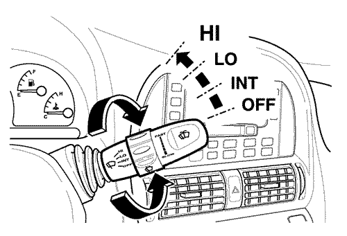
- Interruptor del dispositivo de lavado de parabrisas
- Desplace la palanca hacia el volante en menos de 0,6 segundos y compruebe si se rocía el parabrisas con líquido de lavado sin que se activen los limpiaparabrisas. - Al desplazar la palanca durante más de 0,6 segundos aprox., el parabrisas es rociado con líquido de lavado y los limpiaparabrisas son operados durante varios ciclos.
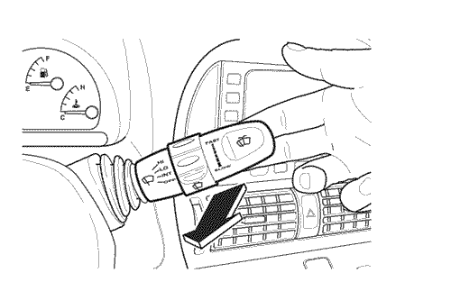
- Limpiado automático con sensor de lluvia(opcional)
- Compruebe que los limpiaparabrisas operen suavemente al caer agua cerca de la parte superior del parabrisas (campo del sensor de lluvia) con el interruptor de encendido activado en la posición AUTO.

18. INTERRUPTOR DEL DISPOSITIVO DE LAVADO Y LIMPIAPARABRISAS DE LA LUNETA TRASERA (OPCIONAL)
Presione la palanca en dirección contraria al volante y compruebe su funcionamiento. Posición primera (posición de reposo) = operación continua del limpiaparabrisas trasero a baja velocidad.
Segunda posición (posición de balanceo) = limpiaparabrisas y dispositivo de lavado
- Control intermitente y automático (opcional, sólo en TACUMA/REZZO)
Compruebe que el limpiaparabrisas trasero opere de forma intermitente en la posición primera y que opere automáticamente al seleccionar la marcha atrás con la función de limpiaparabrisas delantero activada.

19. RADIOCASETE, ALTAVOCES, ANTENA (OPCIONAL)
Sistemas de audio (opción)
Compruebe la operación del radio/cassette, altavoces y antena.
Control remoto (opcional)
Compruebe la operación del control remoto en el volante.
<Modelos de Europa Occidental>
Botón | Modo | Presión breve | Presión prolongada |
VOL + | Todos | Aumentar volumen |
VOL - | Todos | Reducir volumen |
SRC | Todos | Cambiar fuente (modo) |
ON/OFF | Todos | Silenciador o Apagar | Encender |
BUSCAR | Radio | Siguiente estación preseleccionada | Siguiente estación captable |
Casete | S-CPS adelante |
CD | Siguiente CD | Siguiente pista |
<Otros modelos>
Botón | Modo | Presión breve | Presión prolongada |
VOL + | Todos | Aumentar volumen |
VOL - | Todos | Reducir volumen |
MODO | Todos | Cambiar modo |
PWR | Todos | Encender / Apagar |
BUSCAR | Radio | Siguiente estación preseleccionada | Siguiente estación captable |
Casete | Adelantar AMS | Adelantado rápido |
CD | Siguiente pista | . |
20. PORTATAZAS
Compruebe el portatazas situado debajo del panel de climatizador presionando su tapa. Después de comprobar, vuelva a ponerla firmemente hasta que se enganche.
21. ENCENDEDOR
Compruebe la operación del encendedor. Presione el encendedor con el interruptor de encendido en la posición "ON" o "ACC". Saltará automáticamente cuando se caliente.
Nota: Si el encendedor no salta al cabo de 30 segundos, extráigalo y compruébelo.

22. RELOJ
Compruebe la operación del reloj pulsando el botón siguiente con el interruptor de encendido en posición ON.
- H: Botón de ajuste de hora
- Pulse este botón para ajustar los dígitos de hora
- M: Botón de ajuste de minutos
- Pulse este botón para ajustar los dígitos de minuto
- S: Para restablecer la hora con la señal horaria, pulse este botón.
- Por ejemplo, si pulsa este botón entre las 8:00 y las 8:29, se mostrará 8:00. Si pulsa este botón entre las 8:30 y las 8:59, se mostrará 9:00.
- 8:00 - 8:29 → 8:00
- 8:30 - 8:59 → 9:00

Reloj digital con visualización de temperatura exterior (opcional)
- H: Botón de ajuste de hora
- M: Botón de ajuste de minutos
- T: Botón de visualización de temperatura
- Pulse este botón para mostrar la temperatura exterior.
- La pantalla cambiará de la manera siguiente:
- Tiempo → Celsius (°C) → Fahrenheit (°F)

23. CIERRE DE PUERTA
Compruebe desde el exterior si las puertas están o no bloqueadas con ayuda de la llave.
Todas las puertas se pueden bloquear y desbloquear desde el interior empujando o tirando de los botones de cierre de puerta situados en el pestillo interior de cada puerta.
El botón de cierre de la puerta del conductor no puede presionarse con la puerta abierta a fin de evitar que el conductor se quede fuera por accidente.


- Sistema de cierre centralizado(opcional)
- Todas las puertas y la puerta trasera pueden bloquear o desbloquear simultáneamente al bloquear o desbloquear la puerta del conductor.
- Cierre de seguridad infantil
- Compruebe si las puertas traseras pueden abrirse desde el interior después de subir el fiador metálico situado debajo del cierre de ambas puertas traseras.
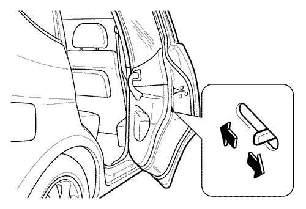
24. VENTANILLA DE PUERTA
Compruebe la operación de las ventanillas de las puertas.
Ventanillas manuales
Gire la manilla de la ventanilla en el panel de la puerta.
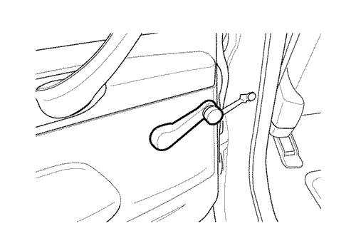
Elevalunas eléctricos (opcional)
- Opere los interruptores de elevalunas del interior de cada puerta con el conmutador de encendido en posición ON.
- Para bajar la ventanilla, mantenga presionada la parte superior del interruptor.
- Para subir la ventanilla, mantenga levantada la parte superior del interruptor. Suelte el interruptor una vez que la ventanilla haya alcanzado la posición deseada.
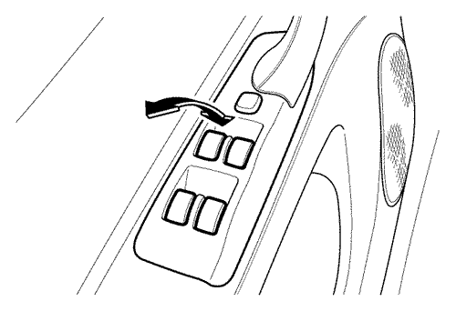
- Interruptor de bloqueo de ventanilla(opcional)
- Al pulsar este interruptor, todas las ventanillas sólo se podrán operar con los interruptores de la ventanilla de la puerta del conductor.
- Para desactivar, vuelva a pulsar el interruptor.
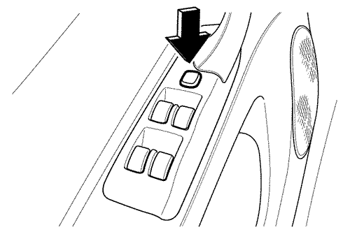
25. RETROVISORES EXTERIORES
Compruebe el funcionamiento del interruptor de ajuste situado en el panel del puerta de conductor
26. VOLANTE DE DIRECCIÓN BASCULANTE (OPCIONAL)
Compruebe la operación del volante de dirección basculante.
- Puede ajustarse pulsando hacia el tablero de instrumentos la palanca de control situada debajo de la columna de dirección, y tirando de la palanca luego hacia el lado contrario.

27. TECHO SOLAR DE ACCIONAMIENTO ELÉCTRICO (OPCIONAL)
Opere el interruptor situado a la derecha de la lámpara de techo, entre las viseras, con el encendido en ON.
- Deslizamiento del techo solar
- Para abrir, pulse la parte derecha del interruptor y reténgalo. Para cerrar, pulse la parte izquierda del interruptor y reténgalo. Suelte el interruptor una vez que el techo solar haya alcanzado la posición deseada.

- Inclinación del techo solar (este interruptor puede operarse con el techo solar cerrado)
- Para levantar, pulse la parte izquierda del interruptor y reténgalo. Para cerrar, pulse la parte derecha del interruptor y reténgalo. Suelte el interruptor una vez que el techo solar haya alcanzado la posición deseada.
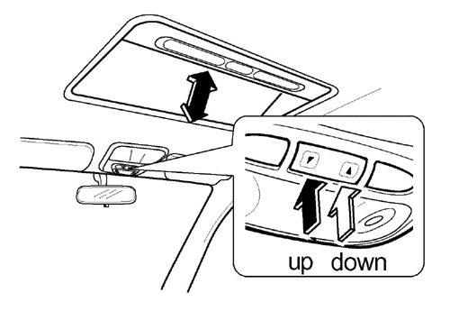
* Separación tolerada entre el borde trasero del TECHO SOLAR y el TECHO: +/- ± 2 mm (0.08")
28. ASIENTO
Compruebe el funcionamiento de los asientos.
- Ajuste del deslizamiento del asiento delantero
- Para adelantar o retrasar el asiento, levante la palanca de control situada bajo la parte delantera del asiento delantero, y reténgala. A continuación, deslice el asiento hasta la posición deseada y suelte la palanca.

- Ajuste de la reclinación del asiento delantero
- Para ajustar el asiento hacia atrás, gire la rueda del lateral exterior del asiento hacia atrás, hasta lograr el ángulo deseado.
- Para el ajuste de reclinación con palanca, levante ésta hasta lograr el ángulo deseado.

- Ajuste de altura del asiento de conductor(opcional)
- Para ajustar el ángulo de la almohadilla del asiento del conductor, gire las ruedas en ambos sentidos.

- Reposacabezas
- Para ajustar los reposacabezas de los asientos delanteros y trasero, levántelos o presiónelos al tiempo que pulsa el botón de desbloqueo.

- Para levantar el reposacabezas delantero, presiónelo hacia delante. El reposacabezas recupera su posición recta cuando se presiona hacia delante completamente.

- Apoyo lumbar del asiento(opcional)
- Para ajustar los apoyos lumbares de conductor y pasajero, gire la rueda del lateral exterior del asiento hacia atrás, hasta lograr el ángulo deseado.

- Interruptor de control de asiento de accionamiento eléctrico(opcional)
- - Ajuste del deslizamiento del asiento.
- Para adelantar o retrasar el asiento, mueva el interruptor hacia delante o hacia atrás. A continuación, deslice el asiento hasta la posición deseada y suelte el interruptor.

- - Ajuste de la altura del asiento
- Para ajustar la altura de la parte delantera de la almohadilla del asiento, presione la parte delantera del interruptor hacia arriba o hacia abajo. Para ajustar la altura de la parte trasera de la almohadilla del asiento, presione la parte trasera del interruptor hacia arriba o hacia abajo. Para ajustar la altura de toda la almohadilla del asiento, presione la parte delantera y trasera del interruptor simultáneamente hacia arriba o hacia abajo.

- - Ajuste de la reclinación del asiento
- Para inclinar hacia delante o atrás el respaldo, mueva hacia delante o atrás la parte superior del interruptor y reténgala.

- Giro del asiento delantero de pasajero(opcional)
- Para girar el asiento delantero de pasajero hacia atrás, deslice el asiento completamente hacia atrás, ajuste el respaldo en posición vertical y gire en sentido contrahorario al tiempo que presiona hacia fuera la palanca de giro (en los modelos con volante a la derecha, gire en sentido horario).

- Reposabrazos(opcional)
- Para emplear los reposabrazos, tire hacia delante del extremo de los mismos.

- Mesa plegable de respaldo(opcional)
- Para emplear la mesa de respaldo, tire hacia arriba del extremo de la mesa.
- Pliegue del respaldo del asiento trasero(opcional)
- Tire de la palanca de desbloqueo del extremo superior de cada partición de respaldo para desbloquearlo y, a continuación, pliegue el respaldo hacia delante y abajo.

- Pliegue doble del respaldo del asiento trasero(opcional)
- Tire de la correa del lateral trasero de cada partición de almohadilla y levante el asiento.

- Retenga empleando el gancho incorporado.
- La longitud de la correa es ajustable.

- Desmontaje de asientos traseros(opcional)
- Pliegue hacia delante los asientos traseros. Desbloquee las bisagras de ambos laterales de cada partición de asiento presionando hacia abajo la palanca de desbloqueo y extraiga el asiento.

- Ajuste del deslizamiento del asiento trasero central
- (sólo en asiento trasero de 3secciones)
- Tire de la palanca del lateral delantero de la almohadilla del asiento hacia delante y reténgala. A continuación, deslice el asiento hasta la posición deseada y suelte la palanca.

- Ajuste de la reclinación del asiento trasero
- (sólo en asiento trasero de 2 secciones)
- Para inclinar el respaldo del asiento trasero hacia atrás, desmonte el estante trasero, accione la manija de desbloqueo y ajuste el respaldo a la posición deseada.

29. PALANCA DE APERTURA DE LA PORTEZUELA DEL DEPÓSITO DE COMBUSTIBLE
Pare el motor y abra la portezuela del depósito tirando hacia arriba de la palanca de apertura de la portezuela del depósito, que está situada debajo del lateral izquierdo del asiento de conductor.

30. PALANCA DE APERTURA DE LA TAPA DEL MALETERO
Compruebe el funcionamiento de la palanca o botón de apertura de la tapa del maletero.


31. PALANCA DE APERTURA DEL CAPÓ
Para abrir el capó, tire de la palanca de apertura situada en el lateral inferior izquierdo del panel de instrumentos.

Presione hacia la derecha la parte inferior del dispositivo de enganche y levante el capó.

Para mantener el capó en posición abierta, inserte la barra de apoyo en el hueco de la cara inferior del capó.
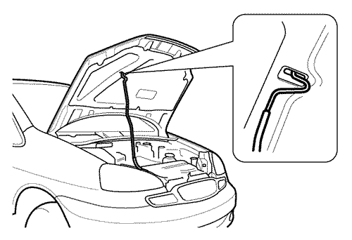
32. SISTEMA ANTIRROBO (OPCIONAL)
- Sistema del inmovilizador
- El sistema inmovilizador evita que el vehículo sea arrancado aislando el suministro eléctrico al sistema de encendido, bomba de combustible e inyectores de combustible. Se trata de una llave de encendido mecánica con transpondedor incorporado, codificado de manera electrónica. Compruebe si la luz del indicador de seguridad se enciende y apaga cuando el encendido está activado.
- Protección perimétrica
- - Configuración del sistema
- 1. Cierre todas las ventanillas.
- 2. Gire la llave de encendido a la posición LOCK. Extraiga la llave.
- 3. Asegúrese de que todos los ocupantes abandonen el vehículo.
- 4. Cierre todas las puertas, capó y puerta trasera. Cierre todas las puertas presionando el botón de cierre en el transmisor. En este momento, el intermitente de giro parpadea una vez, indicando que todas las puertas están cerradas.
- 5. Asegúrese de que el indicador de seguridad del lateral derecho del reloj digital comience a parpadear.
- 6. La luz de seguridad comenzará a parpadear una vez cada 0.8 segundos (0.1 segundos: ON, 0.7 segundos: OFF). El sistema está ahora activado.
- - Comprobación del sistema
- 1. Abra todas las ventanillas.
- 2. Configure el sistema tal y como se describe en "configuración del sistema". Las puertas delanteras deben cerrarse con el transmisor. Asegúrese de esperar hasta que el indicador de seguridad se encienda.
- 3. Desbloquee una de las puertas usando el cierre de puerta interior. A continuación, el sistema debería activar la alarma.
- 4. Cancele el sistema desbloqueando las dos puertas delanteras con la llave o el transmisor.
- 5. Repita esta operación para las demás puertas, tapa del maletero y capó. Al comprobar el capó, compruebe también que el sistema esté activado cuando el terminal de batería se desconecte y se vuelva a conectar.
33. SISTEMA DE ENTRADA SIN LLAVE CON FUNCIÓN ANTIRROBO (OPCIONAL)
Compruebe el funcionamiento del sistema de entrada sin llave utilizando el transmisor.
Activación de modo antirrobo y cierre de puerta
Presione el botón de cierre de puerta en el transmisor y suéltelo. El LED en el transmisor parpadea una vez.
Todas las puertas se bloquean y las luces intermitentes de advertencia emitirán un destello acompañado de una señal acústica. El modo antirrobo está ahora activado.
Si el interruptor de encendido está situado en posición ON, queda inhabilitado el modo antirrobo y las luces intermitentes de advertencia.
Para cancelar el modo antirrobo, pulse el botón de desbloqueo de puertas y libere el transmisor o bien abra las puertas con la llave.
Desactivación de modo antirrobo y desbloqueo de puertas
Presione el botón de desbloqueo de puerta en el transmisor y suéltelo. El LED del transmisor parpadea una vez.
Todas las puertas se desbloquean y las luces intermitentes de advertencia emitirán dos destellos acompañados de una señal acústica. El modo antirrobo está ahora desactivado.
Ahora bien, si el interruptor de encendido está situado en posición ON, las luces intermitentes de advertencia no emitirán ningún destello.
Bloqueo automático de puertas
Si la puerta no es abierta o no se arranca el motor en el espacio de 30 segundos tras el desbloqueo de la puerta mediante el transmisor con el vehículo en modo antirrobo, todas las puertas se bloquearán automáticamente, activándose el modo antirrobo.
Función de alarma antirrobo
Cuando el vehículo está en el modo antirrobo, durante 30 segundos la alarma suena y las luces intermitentes de emergencia parpadean en los siguientes casos.
- Al abrir la puerta con cualquier método que no sea el transmisor o la llave de encendido.
- Al arrancar el motor con una llave de encendido o cualquier otro método sin haber desactivado previamente el modo antirrobo.
Para detener la alarma y los intermitentes de advertencia, pulse cualquier botón del transmisor.
34. SOPORTE DE GAFAS DE SOL
Compruebe que el soporte de gafas de sol se abra con suavidad y que cierre correctamente.
Para abrir el soporte de gafas de sol, presione la parte trasera de la cubierta. Para cerrarlo, levante y presiónelo hasta que se enganche.
35. INTERRUPTOR DE LA CALEFACCIÓN DE ASIENTO (OPCIONAL)
Compruebe la operación de la calefacción del asiento pulsando los botones con el interruptor de encendido en posición ON.